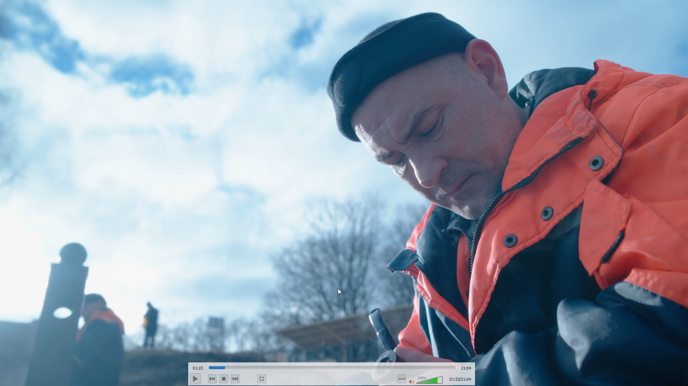

Смотреть фильм ↗DOCUMENTARY · 2025
«Жизнь Человека»
Документальный фильм о подводном спасателе, который занимается реабилитацией военнослужащих после ампутаций.
Режиссёр · Монтажёр★ Выбран для презентации в ВГИК · Лучший документальный фильм — «Кино Кавказ»